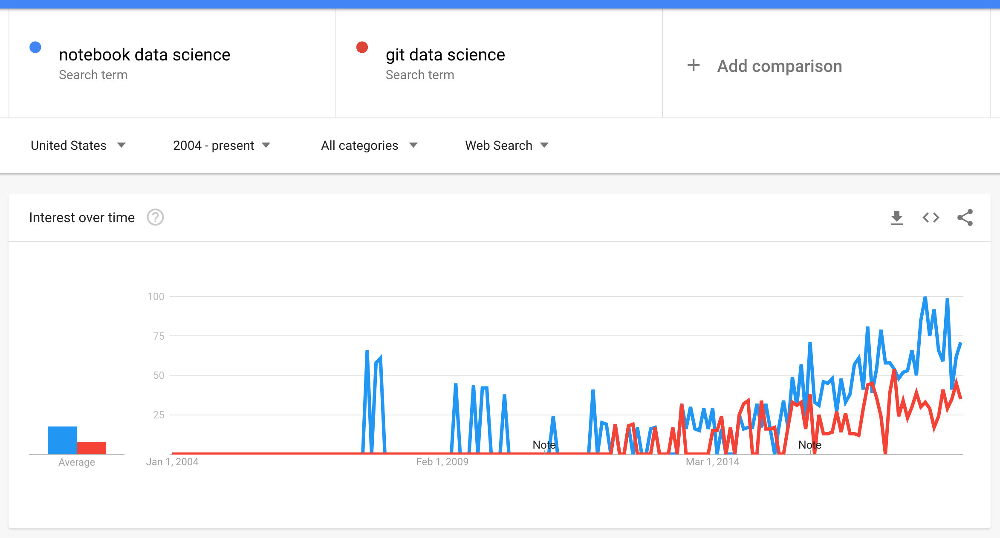

The Experiment
To git or not to git? Much like the adage from the old Bard's Hamlet, this question marks what is an unbridgeable chasm that exists within many data teams. Unapologetic engineers swear by version control and shun Jupyter Notebooks for production-level code; on the other hand, within the data science world git is seen as a barrier to adoption and Notebooks are rock stars. "But notebooks don't even provide a very clean git diff," bemoans the engineer.

Fig. 1: irrefutable proof that notebooks are more popular than git within the data science community
It is true that companies with serious engineering and data chops are elevating the Notebook to production. Just check out what Netflix and Databricks have done.
Is this a fad? And is there a limit to how far this can go? You can't build an OS using notebooks, can you?
When building tools and data-processing frameworks for teams, I have always depended on making my code from the comfortable land of text-based development. The code repository is the launching point for everything. You can have Python packages that house common utilities as well as application code. You can have docker-compose files and Ansible to handle your server needs. You can run your test suites. You can even keep your documentation in there, except for when it comes to larger images that you occasionally commit and then instantly regret.
At some point the Python packages and perhaps some .jar files fit nicely into the data exploration process, which most often will take place in a Notebook. The problem arises when a customer of your custom-framework-powered Notebook wants to add functions to the common set of utilities or even make changes to the framework. Chances are if the changes are for the framework, then your customer will be happy to leave the land of Notebooks, make some changes to the main repository, add tests, and submit pull request.
If the change is a simple addition of a utility, however, there may be friction. Where does it go? How do I commit it? Who cares about trailing whitespaces?
You might say that the engineering community obsesses about certain things like code style, just as some mathematicians might be bothered by the use of the Axiom of Choice in a proof (I mean, c'mon, the Banach-Tarski paradox!). Maybe neither attitude in the long run really helps you get things done, and for someone that's in the intersection of both groups that's difficult to admit.
On the other end of the spectrum, there are problems as well. Larger projects become an operational drag on teams if the technical debt is allowed to amass. This comes in all forms, including lack of tests, lack of documentation, and bad software design. To have good sofware design you need good engineers. If you want to make anything complicated, if you want to change anything, or if you want multiple people to contribute, you have to have tests and you have to have documentation. Fortunately, at the beginning of any project, it is actually worth it for a team to gain some technical debt in order to get a product out sooner to get early feedback; be careful, though, technical debt is a slippery slope that makes individual contributers unhappy.
So what is the experiment?¶
Well, this blog is written in Jupyter notebooks. A notebook can do code, documentation, and tests even. If we want to follow the DRY philosophy (Don't Repeat Yourself), then the idea that code shouldn't have to be rewritten. Can we take that to the logical extreme and make blog entries a place for code and data?
The following code from jupyter.org will help us:
import io, os, sys, types
from IPython import get_ipython
from nbformat import read
from IPython.core.interactiveshell import InteractiveShell
def find_notebook(fullname, path=None):
"""find a notebook, given its fully qualified name and an optional path
This turns "foo.bar" into "foo/bar.ipynb"
and tries turning "Foo_Bar" into "Foo Bar" if Foo_Bar
does not exist.
"""
name = fullname.rsplit('.', 1)[-1]
if not path:
path = ['']
for d in path:
nb_path = os.path.join(d, name + ".ipynb")
if os.path.isfile(nb_path):
return nb_path
# let import Notebook_Name find "Notebook Name.ipynb"
nb_path = nb_path.replace("_", " ")
if os.path.isfile(nb_path):
return nb_path
class NotebookLoader(object):
"""Module Loader for Jupyter Notebooks"""
def __init__(self, path=None):
self.shell = InteractiveShell.instance()
self.path = path
def load_module(self, fullname):
"""import a notebook as a module"""
path = find_notebook(fullname, self.path)
print ("importing Jupyter notebook from %s" % path)
# load the notebook object
with io.open(path, 'r', encoding='utf-8') as f:
nb = read(f, 4)
# create the module and add it to sys.modules
mod = types.ModuleType(fullname)
mod.__file__ = path
mod.__loader__ = self
mod.__dict__['get_ipython'] = get_ipython
sys.modules[fullname] = mod
# extra work to ensure that magics that would affect the user_ns
# actually affect the notebook module's ns
save_user_ns = self.shell.user_ns
self.shell.user_ns = mod.__dict__
try:
for cell in nb.cells:
if cell.cell_type == 'code':
# transform the input to executable Python
code = self.shell.input_transformer_manager.transform_cell(cell.source)
# run the code in themodule
exec(code, mod.__dict__)
finally:
self.shell.user_ns = save_user_ns
return mod
class NotebookFinder(object):
"""Module finder that locates Jupyter Notebooks"""
def __init__(self):
self.loaders = {}
def find_module(self, fullname, path=None):
nb_path = find_notebook(fullname, path)
if not nb_path:
return
key = path
if path:
# lists aren't hashable
key = os.path.sep.join(path)
if key not in self.loaders:
self.loaders[key] = NotebookLoader(path)
return self.loaders[key]
sys.meta_path.append(NotebookFinder())
Now let's import from Efficiently Generating Trees!
from efficiently_generating_trees import RootedTreeCodeGenerator, known_sequence
RootedTreeCodeGenerator.make_table(sum(known_sequence[:5]))
# LGTM!